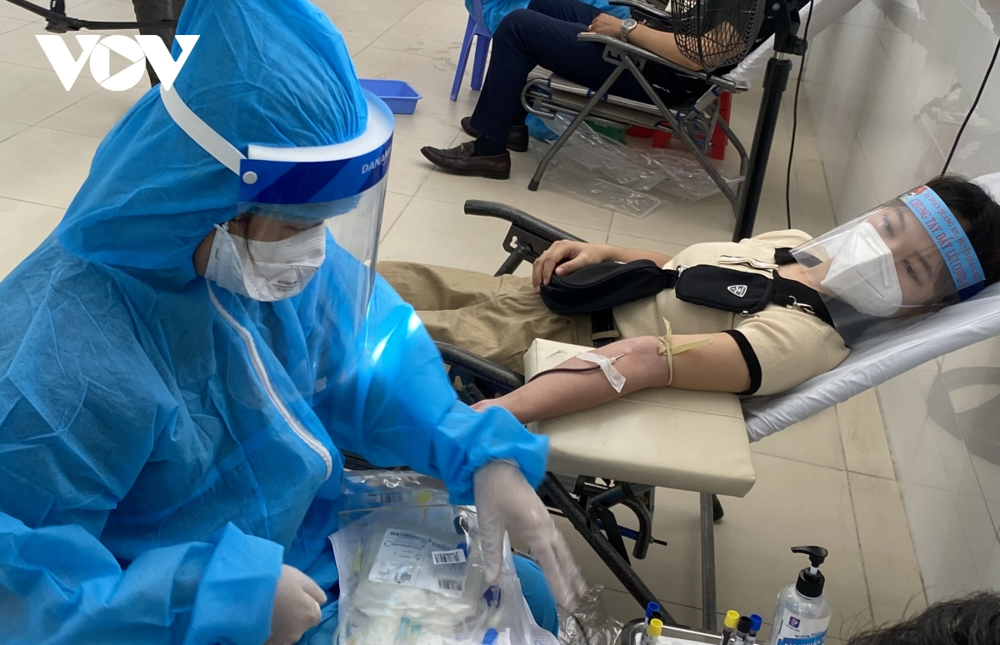

Chủ nhật, ngày 17 tháng 4 năm 2022
Bạn đã Từng nghe nói đến dịch vụ mua bán máu tại Đà Nẵng và Đang cần bán máu kiếm thêm một khoản tiền giải quyết vấn đề tài chính? Bạn chưa tìm thấy địa chỉ để bán máu với giá cao tại Đà Nẵng? Hiện giờ, lượng máu trong các bệnh viện ở Đà Nẵng mới chỉ cung cấp được 25% yêu cầu sử dụng của người bệnh. Đã có khá nhiều trường hợp không đáng có xảy ra chỉ vì thiếu máu, Không chọn được người bán máu để truyền kịp thời. Vậy nên, dịch vụ mua bán máu ở Đà Nẵng là nhu cầu bức thiết, có giá trị nên được nhiều người ủng hộ đặc biệt là các bạn sinh viên. Người bán máu và người mua máu có thể trực tiếp thỏa thuận sau Đó cùng đến bệnh viện Thực hiện thủ tục hiến máu nhân đạo tại Đà Nẵng.
Những Điều kiện để có thể hiến máu Đà Nẵng:+ Người trong độ tuổi từ 18 đến 60 tuổi, đối với nam giới ít nhất 45kg trở lên và nữ giới là 42 kg trở lên
+ Người bán máu không mắc các bệnh truyền nhiễm như viêm gan B, HiV, viêm gan C và các bệnh khác có thể Lây nhiễm qua đường máu
+ Giữa các lần hiến máu nhân đạo ở Đà Nẵng nên để xa nhau khoảng 4 tuần còn nếu muốn giữ gìn sức khỏe thì nên để thời gian là 12 tuần một lần bán máu. Nếu Bạn thấy sức khỏe mình tốt, các lần lấy máu có thể gần nhau hơn và khi bán máu phải tránh không thể để bác sĩ thấy dấu kim ở vân tay, nếu có nên truyền đá lạnh cho không còn trước khi đi, đặc biệt cần nhớ mỗi lần lấy máu gần nhau nên tiến hành ở các bệnh viện khác nhau tại Đà Nẵng
+ Nếu bạn có sức khỏe tốt, còn trẻ mà mong muốn có số tiền to hơn thì có thể bán tiểu cầu. Giá bán tiểu cầu sẽ nhiều gấp hai lần giá bán máu tuy vậy không nên bán tiểu cầu thường xuyên như máu, chỉ nên 2 tháng 1 lần để không ảnh Hưởng tới sức khỏe
+ Chuẩn bị các giấy tờ cần thiết về nhóm máu và sức khỏe tốt để quá trình hiến máu nhân đạo Đà Nẵng diễn ra đơn giản, nhanh chóng
Những lưu Ý với người mua máu Đà Nẵng:+ Kiểm tra, xét nghiệm để tránh những bệnh truyền nhiễm, bệnh dễ lấy truyền qua đường máu với người mua và lựa chọn nhóm máu thích hợp
+ Không nên đưa hết tiền cho người bán máu khi chưa Làm xong quá trình hiến máu nhân đạo
Trong trường hợp nếu bạn cần tiền mà mới Thực hiện bán máu nên chưa đủ thời gian để hiến máu nhân đạo ở Đà Nẵng tiếp hoặc bạn không muốn bán máu thì có thể vay tiền trực tuyến tại các doanh nghiệp tài chính uy tín tại Đà Nẵng. Bạn có thể vay tiền qua cầm đồ carvet xe máy, ô tô, sổ hộ khẩu, bảng lương, đăng kí xe, laptop,... hoặc với số tiền nhỏ hơn có thể vay tiền chỉ cần CMND, Không cần gặp mặt, chuyển tiền ngay trong ngày.
Liệt kê danh sách các sàn giao dịch tài chính lớn hỗ trợ vay mượn tiền tại Đà Nẵng